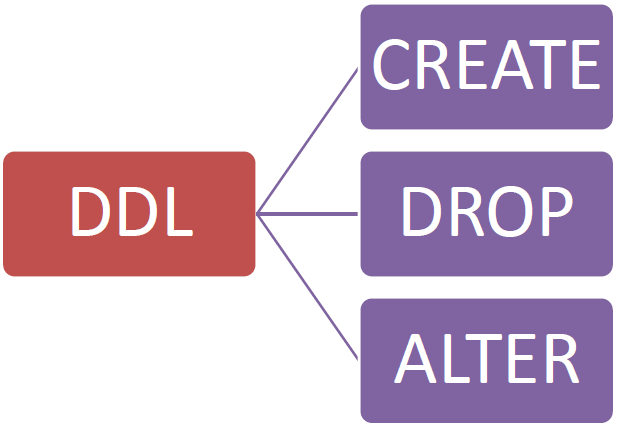

SQL Guide
This page outlines the primary SQL commands for data definition and manipulation. Think of SQL as the language you use to communicate with a database, treating it like a vast digital library.
DDL: The Architect's Language
The DDL (Data Definition Language) is the set of commands that functions as the library's architect. It doesn't modify the books (the data) themselves, but rather the shelves and cabinets (the structure) where the books are stored.
-
CREATE (To Build): Used to construct a new "shelf" (table) to store your data.
Example:CREATE TABLE Books (...); -
ALTER (To Modify): Used to modify a pre-existing "shelf." If you need an additional space or a new label (a column), ALTER is the command to make that adjustment.
Example:ALTER TABLE Books ADD COLUMN PublicationYear INT; -
DROP (To Demolish): This is used when you no longer need a shelf and decide to remove it completely. Warning: doing so will also permanently delete all the books stored on it!
Example:DROP TABLE Books;
In short, CREATE is used to build, ALTER to modify, and DROP to demolish the structure of your database.
